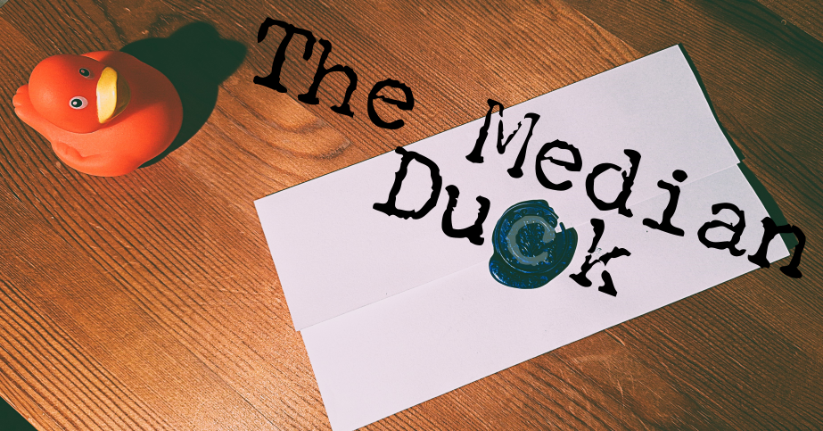

vires in notitia

Welcome to The Median Duck, a self initiated project that aims to educate and entertain the general public on data analytic topics through the hit UK TV show Taskmaster.
This project is in its early stages, but great things are planned; see this vision document for the ambitious plans that I have in mind.
Latest Posts